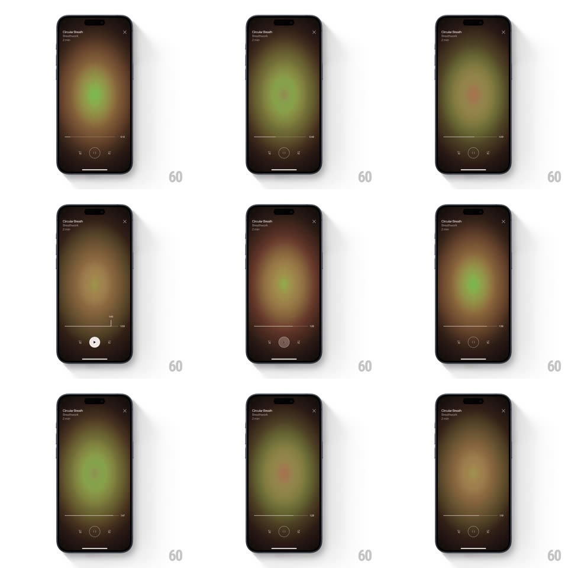

Media
Frame-by-frame

Rebuild this interaction 1:1: Breathwrk's breathing-session player scrubber - dragging the timeline lifts a floating time pill above the thumb, and the whole background's gradient orb shifts hue (amber, green, teal) as you scrub, matching the color of whatever moment you land on.

Rebuild this interaction 1:1: Breathwrk's breathing-session player scrubber - dragging the timeline lifts a floating time pill above the thumb, and the whole background's gradient orb shifts hue (amber, green, teal) as you scrub, matching the color of whatever moment you land on.
## Integration
Integration: stack-agnostic spec - springs given as stiffness/damping, timed motions as duration + curve; map every value to your framework and animation library of choice.
## Scene
Dark session screen ("Circular Breath", Breathwrk, "21 min"): a large soft radial gradient orb fills the screen, a bottom row with a thin timeline, play/pause button, and skip icons.
## Motion spec
Pattern: scrubber with floating time indicator and hue-linked background.
- Touch down on the timeline: a time pill (current position, e.g. "1:41") springs up above the thumb (spring ~380/22, 250ms) and the timeline thickens slightly (2pt -> 4pt, 150ms).
- Drag: the pill tracks the finger 1:1 horizontally with ~24px of float above the track; the background orb's hue tweens continuously to the color keyed to the scrub position (amber -> green -> teal across the session), easing 300ms behind the thumb.
- Release: the pill springs back down and fades (200ms), the playhead settles (spring ~320/24), the background keeps the landed hue.
- Playback: the orb breathes slowly (scale 1 -> 1.08 -> 1, synced to the breath cue ~5.5s).
## Calibration
- Background hue change is lagged (~300ms behind the finger) so it reads as a wash, not a strobe.
- The time pill is white-on-dark with a small down-pointing tail.
## Reduced motion
Scrub without background hue shift; time pill fades in/out without the spring lift.
## Don't miss
- The orb's color is tied to session position, not elapsed interaction - the same position always shows the same hue.
- Timeline is thin and unobtrusive at rest; all emphasis happens while dragging.